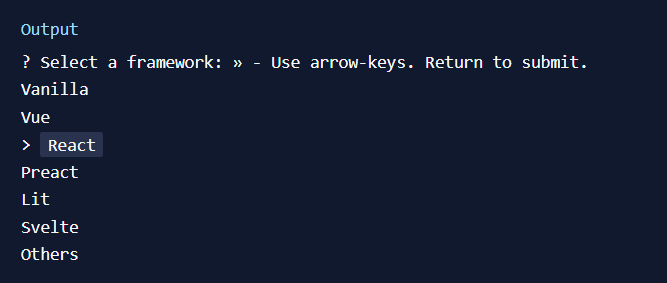

DAY 1 of #20DaysOfReact
DAY 2 of #20DaysOfReact
DAY 3 of #20DaysOfReact
Topics Covered :
- -What is React?
- -Setting up a development environment.
- -What is a React component?
What is React?
React is a popular JavaScript library for building user interfaces. It was developed by Jordan Walke, a software engineer at Facebook, and is widely used for creating dynamic and interactive web applications. React makes it easier to manage the state of your application, handle user interactions, and efficiently update the UI when data changes. It follows a component-based architecture, allowing you to build complex UIs by composing reusable components.
Why was react needed?
React was created because building complex user interfaces using just plain JavaScript can become messy and hard to manage as projects grow. React makes this easier by providing a structured way to create user interfaces.
Imagine you're building a house with lego bricks. JavaScript is like having a huge pile of lego pieces, and you need to figure out how to assemble them into a house from scratch. React, on the other hand, gives you a set of pre-designed lego components (like doors, windows, and walls) that you can easily snap together to build your house. This makes building and maintaining the house much simpler and less error-prone.
So, React is like a set of tools and rules that help you build web interfaces more efficiently and maintain them as they grow, without starting from scratch every time.
React's declarative approach
Think of React's declarative approach as writing a to-do list for a personal assistant. In an imperative task delegation, you'd specify detailed instructions for each task, like, "Go to the store, buy milk, check the expiry date, and return home." You're managing every task step by step.
With React, you act like a project manager. You create a high-level task list, saying, "I need groceries from the store," and your assistant handles the logistics, deciding the best route, checking for discounts, and ensuring everything is brought back. You're focused on what needs to be done, not micromanaging the process.
In this task delegation analogy, React allows you to outline the desired tasks (UI state) without getting bogged down in the specifics (DOM updates). When your shopping list (data) changes, React efficiently manages the execution of tasks (UI updates), making sure your web app stays organized and efficient. It's like having a reliable assistant who takes care of the details, making your coding more efficient and your web app management hassle-free.
Setting up a development environment:
Create a Vite Project: yarn create vite
After the script finishes, you will be prompted to enter a project name. After entering your project name, Vite will prompt you to select a framework and such additional details.

You can now start the development server to verify that everything is working. Use the following command to run the development server:
yarn run dev
It will run your project in development mode.
Previously the development environment was set up using create-react-app, but it is deprecated now.
What is a React Component?
For now in simpler words, a component is a reusable piece of user interface that can be created as a function (functional component) or as a class (class component).
Why Components?
Components in React make it easier to manage and organize your code because you can create, update, and reuse them as needed.
That's it for Day 1! Click here for the next day, or check out some resources below.